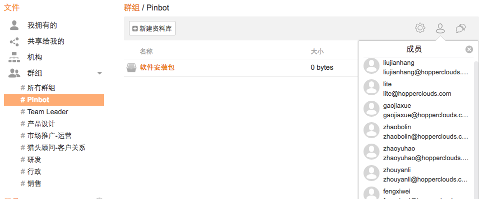
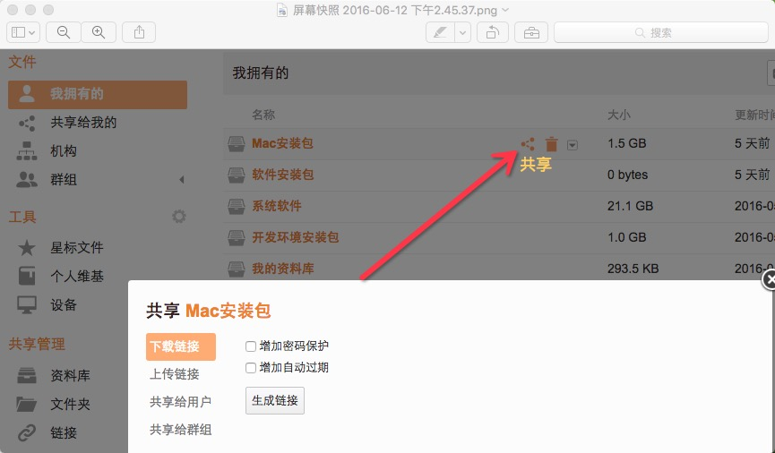

Pinbot私有云使用手册¶
私有云访问地址¶
1 Seafile浏览器使用¶
1.1 浏览器访问¶
办公环境建议直接访问内网地址：http://192.168.0.190:8001/ 内网传输速度快 外网环境访问：http://seafile.pinbot.me/ http://yun.pinbot.me/ 内外网限制，只能从外网访问
邮箱：自己的聘宝邮箱，例：liudong@hopperclouds.com
密码：邮箱中@符号前面的内容，例：liudong

1.2 非办公外网环境需要访问外网地址¶
1.3 文件共享方法¶
浏览器登录seafile主界面后
浏览器现有群组
群组成员信息 
个人信息设置
注：Pinbot组包含公司所有成员，其他各组成员是根据Tower团队进行设置，如有其他需求，可进行更改设置；
选择文件共享 
将文件/目录共享给其他用户(可选择所分享的文件目录的权限：只读/可读写)

将文件/目录共享给其他组(可选择所分享的文件目录的权限：只读/可读写)

2 Seafile客户端使用¶
2.1 安装seaflie私有云客户端¶
下载地址：https://www.seafile.com/download/ 注：Windows和Mac根据设备下载对应的版本；
2.2 登录访问账号¶
内网地址：http://192.168.0.190:8001/ 外网地址：http://seafile.pinbot.me/
邮箱：自己的聘宝邮箱，例：liudong@hopperclouds.com
密码：邮箱中@符号前面的内容，例：liudong
2.3 内网访问¶
内网直接访问：http://192.168.0.190:8001/
2.4 外网访问¶
非办公外网环境需要访问外网地址：http://seafile.pinbot.me/

客户端登录主界面
客户端操作界面

2.5 客户端文件共享¶
选择共享目录

2.5.1 内部外链共享¶
打开共享目录——>选择需要共享的文件——>右键 获取Seafile内部外链——>复制Seafile Web Link 链接——发送给被共享成员

访问共享链接界面

将文件共享其他成员——>选择共享

选择发送
2.5.2 外部共享¶
打开共享目录——>选择需要共享的文件——>右键 获取Seafile共享外链——>复制Share Link 链接——发送给被共享成员

访问共享链接界面